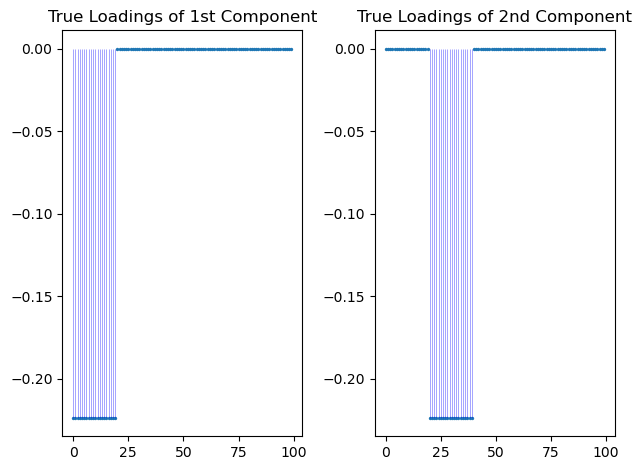
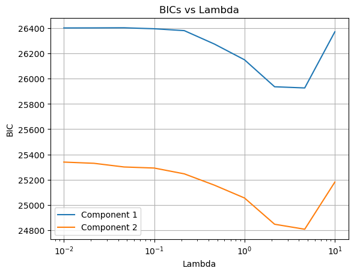
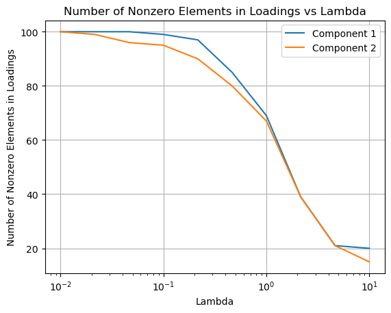
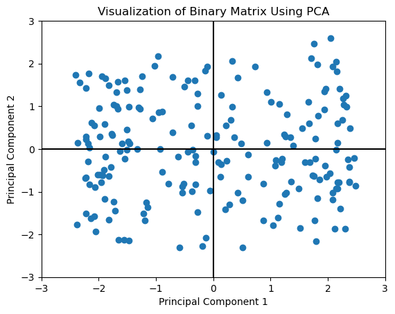
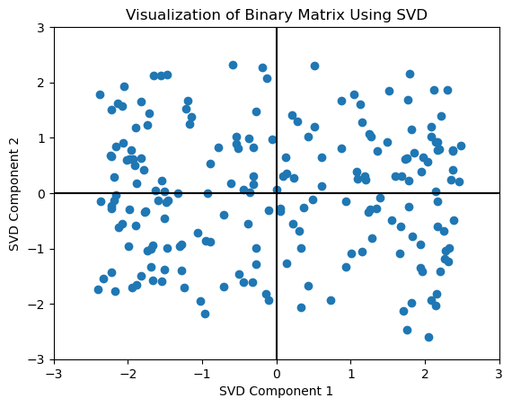
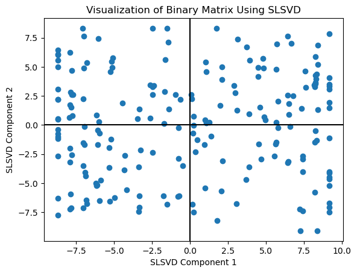
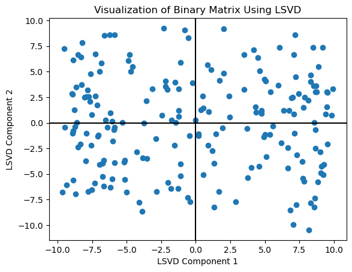
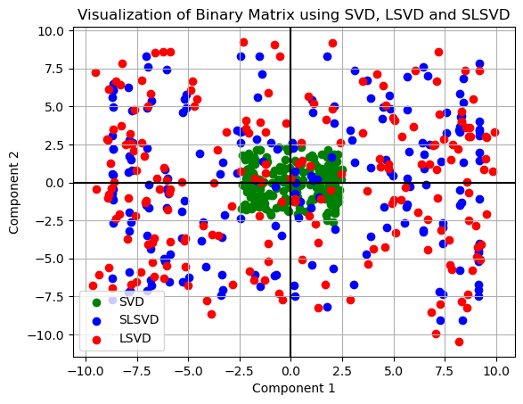
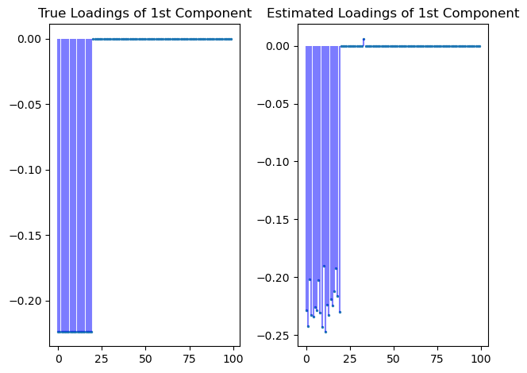
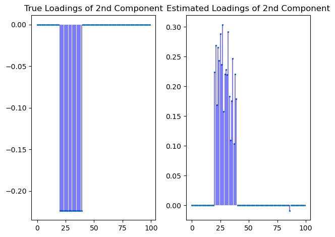

Sparse Logistic Singular Value Decomposition: User Guide
We developed a Python package for Sparse Logistic Singular Value Decomposition (SLSVD) to analyze binary matrix data. The algorithm combines the Majorization-Minimization and Coordinate Descent algorithms.
Setup
Before starting, ensure you have installed the slsvd package and import the necessary libraries:
import slsvd
import numpy as np
import matplotlib.pyplot as plt
print(slsvd.__version__)
0.1.1
Simulated Binary Matrix Data Generation
from slsvd.data_generation import generate_data
bin_mat, loadings, scores, diagonal=generate_data(n=200, d=100, rank=2, random_seed=123)
bin_mat.shape
(200, 100)
loadings.shape
(100, 2)
scores.shape
(200, 2)
np.dot(loadings.T, loadings)
array([[1., 0.],
[0., 1.]])
np.dot(scores.T, scores)
array([[195.4146256 , 2.67535881],
[ 2.67535881, 200.14653178]])
np.count_nonzero(loadings, axis=0)
array([20, 20])
diagonal
array([[10, 0],
[ 0, 5]])
plt.subplot(1, 2, 1)
plt.scatter(range(len(loadings[:, 0])), loadings[:, 0], s=2) # Adjust the size parameter
for i, val in enumerate(loadings[:, 0]):
plt.vlines(i, 0, val, color='blue', linestyle='-', alpha=0.5, linewidth=0.5) # Adjust the line width
plt.title('True Loadings of 1st Component')
plt.subplot(1, 2, 2)
plt.scatter(range(len(loadings[:, 1])), loadings[:, 1], s=2) # Adjust the size parameter
for i, val in enumerate(loadings[:, 1]):
plt.vlines(i, 0, val, color='blue', linestyle='-', alpha=0.5, linewidth=0.5) # Adjust the line width
plt.title('True Loadings of 2nd Component')
plt.tight_layout()
plt.show()

plt.figure(figsize=(4, 6))
cmap = plt.cm.get_cmap('viridis', 2)
plt.imshow(bin_mat, cmap=cmap, interpolation='nearest')
cbar = plt.colorbar(ticks=[0.25, 0.75])
cbar.ax.set_yticklabels(['0', '1'])
plt.title('Heatmap of Binary Matrix')
plt.xlabel('Feature')
plt.ylabel('Sample')
plt.show()
/var/folders/gs/vbcs91xd3zd7yw6l3zssxvpr0000gn/T/ipykernel_2460/3611873902.py:2: MatplotlibDeprecationWarning: The get_cmap function was deprecated in Matplotlib 3.7 and will be removed two minor releases later. Use ``matplotlib.colormaps[name]`` or ``matplotlib.colormaps.get_cmap(obj)`` instead.
cmap = plt.cm.get_cmap('viridis', 2)
Sparse Logistic SVD with Coordinate Descent and Majorization-Minimization algorithms
from slsvd.slsvd import sparse_logistic_svd_coord
bin_mat.shape
(200, 100)
Sparse Logistic SVD with $\lambda=0$
mu0, A0, B0, zeros0, BICs0=sparse_logistic_svd_coord(bin_mat, lambdas=np.array([0]),k=2)
zeros0
array([[100., 100.]])
np.mean(mu0)
0.052624279581212116
np.count_nonzero(B0,axis=0)
array([100, 100])
np.dot(B0.T, B0)
array([[ 1. , -0.00859635],
[-0.00859635, 1. ]])
Sparse Logistic SVD with $\lambda\neq 0$
thelam=np.logspace(-2, 1, num=10)
thelam
array([ 0.01 , 0.02154435, 0.04641589, 0.1 , 0.21544347,
0.46415888, 1. , 2.15443469, 4.64158883, 10. ])
mu, A, B, zeros, BICs=sparse_logistic_svd_coord(bin_mat, lambdas=thelam,k=2)
zeros
array([[100., 100.],
[100., 99.],
[100., 96.],
[ 99., 95.],
[ 97., 90.],
[ 85., 80.],
[ 69., 67.],
[ 39., 39.],
[ 21., 21.],
[ 20., 15.]])
BICs
array([[26400.56093469, 25339.30763946],
[26400.98393203, 25329.69269047],
[26401.91833739, 25300.62667966],
[26394.13015485, 25292.20974997],
[26379.34274832, 25246.32328817],
[26273.23816069, 25156.79176936],
[26148.69882226, 25055.34497516],
[25935.28116791, 24847.53997231],
[25925.84775432, 24808.09766231],
[26369.82061851, 25180.8269622 ]])
np.argmin(BICs[:, 0]),np.argmin(BICs[:, 1])
(8, 8)
zeros[np.argmin(BICs[:, 0]), 0], zeros[np.argmin(BICs[:, 1]), 1]
(21.0, 21.0)
for i in range(BICs.shape[1]):
plt.plot(thelam, BICs[:, i], label=f'Component {i+1}')
plt.xlabel('Lambda')
plt.ylabel('BIC')
plt.title('BICs vs Lambda')
plt.xscale('log') # Log scale for better visualization
plt.legend()
plt.grid(True)
plt.show()

for i in range(zeros.shape[1]):
plt.plot(thelam, zeros[:, i], label=f'Component {i+1}')
plt.xlabel('Lambda')
plt.ylabel('Number of Nonzero Elements in Loadings')
plt.title('Number of Nonzero Elements in Loadings vs Lambda')
plt.xscale('log') # Log scale for better visualization
plt.legend()
plt.grid(True)
plt.show()

mu.shape
(100,)
np.mean(mu)
0.052624279581212116
A.shape
(200, 2)
B.shape
(100, 2)
np.count_nonzero(A, axis=0)
array([200, 200])
np.count_nonzero(B, axis=0)
array([21, 21])
np.dot(B.T, B)
array([[1. , 0.00111067],
[0.00111067, 1. ]])
np.dot(A.T, A)
array([[7672.61634966, 277.23466856],
[ 277.23466856, 3986.24113586]])
Numerical Comparisons between SVD, LSVD and SLSVD
bin_mat_c = bin_mat - np.mean(bin_mat, axis=0)
U, S, Vt = np.linalg.svd(bin_mat_c, full_matrices=False)
Vt[:, :2].shape
(100, 2)
loadings.shape
(100, 2)
B.shape
(100, 2)
B0.shape
(100, 2)
from slsvd.metrics import mse, principle_angle, true_positive_rate, false_positive_rate
Comparison of Principle Angle
principle_angle(B, loadings),principle_angle(B0, loadings),principle_angle(Vt[:, :2], loadings)
(14.186741229793489, 19.456950594980345, 86.91505228482407)
Comparison of TPR and FPR
true_positive_rate(B, loadings), false_positive_rate(B, loadings)
(1.0, 0.0125)
true_positive_rate(B0, loadings), false_positive_rate(B0, loadings)
(1.0, 1.0)
true_positive_rate(Vt[:, :2], loadings), false_positive_rate(Vt[:, :2], loadings)
(1.0, 1.0)
Comparison of MSE
mse(B,loadings),mse(B0,loadings), mse(Vt[:, :2],loadings)
(0.12996466111226085, 0.30667356211958535, 3.982815504660171)
Visualization
Visualization of Binary Matrix Using PCA
from sklearn.decomposition import PCA
pca = PCA(n_components=2)
pca_result = pca.fit_transform(bin_mat)
plt.scatter(pca_result[:, 0], pca_result[:, 1])
plt.title('Visualization of Binary Matrix Using PCA')
plt.xlabel('Principal Component 1')
plt.ylabel('Principal Component 2')
plt.axvline(x=0,color='black')
plt.axhline(y=0,color='black')
plt.xlim(-3, 3)
plt.ylim(-3, 3)
plt.show()

Visualization of Binary Matrix Using SVD
bin_mat_c = bin_mat - np.mean(bin_mat, axis=0)
U, S, Vt = np.linalg.svd(bin_mat_c, full_matrices=False)
svd_result = U[:, :2] * S[:2]
plt.scatter(svd_result[:, 0], svd_result[:, 1])
plt.title('Visualization of Binary Matrix Using SVD')
plt.xlabel('SVD Component 1')
plt.ylabel('SVD Component 2')
plt.axvline(x=0,color='black')
plt.axhline(y=0,color='black')
plt.xlim(-3, 3)
plt.ylim(-3, 3)
plt.show()

Visualization of Binary Matrix Using Sparse Logistic SVD
slsvd_result=A
plt.scatter(slsvd_result[:, 0], slsvd_result[:, 1])
plt.title('Visualization of Binary Matrix Using SLSVD')
plt.xlabel('SLSVD Component 1')
plt.ylabel('SLSVD Component 2')
plt.axvline(x=0,color='black')
plt.axhline(y=0,color='black')
plt.show()

lsvd_result=A0
plt.scatter(lsvd_result[:, 0], lsvd_result[:, 1])
plt.title('Visualization of Binary Matrix Using LSVD')
plt.xlabel('LSVD Component 1')
plt.ylabel('LSVD Component 2')
plt.axvline(x=0,color='black')
plt.axhline(y=0,color='black')
plt.show()

Visualization of Binary Matrix using SVD, LSVD and SLSVD
plt.scatter(svd_result[:, 0], svd_result[:, 1], color='green', label='SVD')
plt.scatter(slsvd_result[:, 0], slsvd_result[:, 1], color='blue', label='SLSVD')
plt.scatter(lsvd_result[:, 0], lsvd_result[:, 1], color='red', label='LSVD')
plt.title('Visualization of Binary Matrix using SVD, LSVD and SLSVD')
plt.xlabel('Component 1')
plt.ylabel('Component 2')
plt.axvline(x=0, color='black')
plt.axhline(y=0, color='black')
plt.legend()
plt.grid(True)
plt.show()

Visualization of True Loadings and Estimated Loadings
np.count_nonzero(loadings, axis=0)
array([20, 20])
np.count_nonzero(B, axis=0)
array([21, 21])
np.dot(loadings.T, loadings)
array([[1., 0.],
[0., 1.]])
np.dot(B.T, B)
array([[1. , 0.00111067],
[0.00111067, 1. ]])
plt.subplot(1, 2, 1)
plt.scatter(range(len(loadings[:, 0])), loadings[:, 0], s=2)
for i, val in enumerate(loadings[:, 0]):
plt.vlines(i, 0, val, color='blue', linestyle='-', alpha=0.5)
plt.title('True Loadings of 1st Component')
plt.subplot(1, 2, 2)
plt.scatter(range(len(loadings[:, 0])), B[:, 0], s=2)
for i, val in enumerate(B[:, 0]):
plt.vlines(i, 0, val, color='blue', linestyle='-', alpha=0.5)
plt.title('Estimated Loadings of 1st Component')
plt.tight_layout()
plt.show()

plt.subplot(1, 2, 1)
plt.scatter(range(len(loadings[:, 1])), loadings[:, 1], s=2)
for i, val in enumerate(loadings[:, 1]):
plt.vlines(i, 0, val, color='blue', linestyle='-', alpha=0.5)
plt.title('True Loadings of 2nd Component')
plt.subplot(1, 2, 2)
plt.scatter(range(len(loadings[:, 1])), B[:, 1], s=2)
for i, val in enumerate(B[:, 1]):
plt.vlines(i, 0, val, color='blue', linestyle='-', alpha=0.5)
plt.title('Estimated Loadings of 2nd Component')
plt.tight_layout()
plt.show()

Reference
Lee, S., Huang, J. Z., & Hu, J. (2010). Sparse logistic principal components analysis for binary data. The Annals of Applied Statistics, 4(3), 1579.
Lee, S., & Huang, J. Z. (2013). A coordinate descent MM algorithm for fast computation of sparse logistic PCA. Computational Statistics & Data Analysis, 62, 26-38.